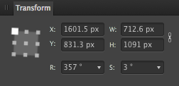

О панели «Трансформация»
Панель «Трансформация» позволяет точно разместить объекты (или слои). Все преобразования выполняются по отношению к точке привязки (угол, середина края или центр), что позволяет регулировать положение, ширину, высоту, угол поворота слоя и наклона выделенного объекта или слоя.
Если к объекту применен пользовательский центр поворота, можно изменять размер объекта, поворачивать или сдвигать его относительно этого центра, используя параметры на панели.

На панели «Трансформация» расположены указанные ниже элементы управления.
- Селектор точек привязки: преобразования выполняются по отношению к выделенной точке привязки. Нажмите на точку привязки, чтобы выделить ее. Если у объекта настроен пользовательский центр поворота, то при выбранном селекторе он не будет учитываться.
- X: положение относительно горизонтальной оси. Увеличение значения перемещает выделенный объект (слой) вправо.
- Y: положение относительно вертикальной оси. Увеличение значения перемещает выделенный объект (слой) вниз.
- Ш: ширина. Используется для регулировки ширины объекта (слоя) по отношению к выделенной точке привязки.
- В: высота. Используется для регулировки высоты объекта (слоя) по отношению к выделенной точке привязки.
 Связь: если этот параметр включен, ширина и высота регулируются пропорционально, при этом сохраняется текущее соотношение сторон. Если этот параметр не включен, то их можно регулировать независимо друг от друга.
Связь: если этот параметр включен, ширина и высота регулируются пропорционально, при этом сохраняется текущее соотношение сторон. Если этот параметр не включен, то их можно регулировать независимо друг от друга.- П: поворот. Используется для поворота объекта (слоя) на определенное количество градусов по отношению к выделенной точке привязки.
- Н: наклон. Используется для наклона объекта (слоя) на определенное количество градусов по отношению к выделенной точке привязки.